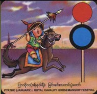

Festivals
- Horsemanship
- Htamaneipwe
- Sand Pagodas
- Thingyan
- Kason Nyaungyaltwinpwe
- Sar Pyan Pwe
- Wa So Pwe
- Sar Yale Tan Mal Pwe
- Hlay Pyaing pwe
- Mee Tun Pwe
- Ka Htain Pwe
- Sarsodaw
Months
- January
- February
- March
- April
- May
- June
- July
- August
- September
- October
- November
- December
|
Pyatho (January)

It is the 10th Myanmar month in the middle of the cool season (December-January). In ancient times it was the month for the equestrian festival held for virtually the whole month, as it involved competitions in horsemanship, bowmanship, lancing and sword fighting, shooting and martial arts.
It was in effect an occasion to select heroes.
It was found to have begun in 674 ME under the reign of pinya Thinhathu but researchers in Bodaw Pay's reign held that it began in the reign of King Nyaugyan in Inn-wa Period.
|